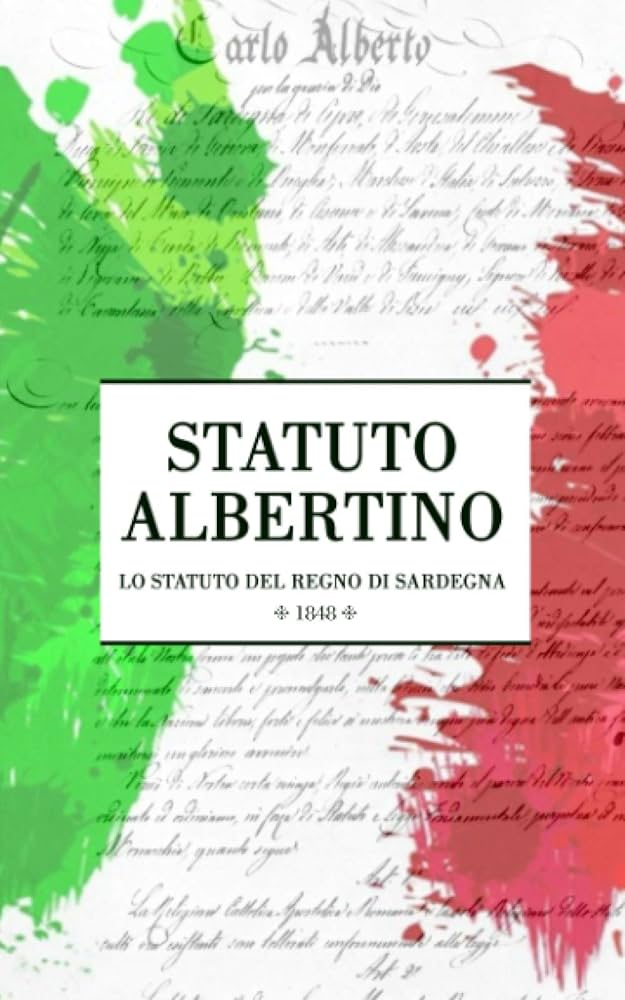
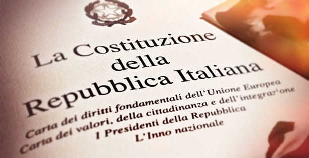

Costituzione italiana e Statuto Albertino
Statuto Albertino
Lo Statuto Albertino è stato promulgato l'4 marzo del 1848 dal re Carlo Alberto di Savoia, poiché in quel periodo c’erano i moti rivoluzionari e la monarchia temeva per la sua “incolumità”. Conteneva 84 articoli e venne pubblicato sia in italiano che in francese. Inoltre, la figura del re era sacra e inviolabile.
Successivamente, divenne lo “Statuto del Regno d’Italia” a seguito dell’unificazione.
Caratteristiche:
- Ottriato: è stato concesso dal sovrano, perciò l’ha redatto lui secondo il suo volere.
- Breve: i diritti dei sudditi sono poco specificati (sono contenuti solo su 9 articoli)
- Flessibile: può essere modificato con una legge ordinaria
Per quanto riguarda la divisione dei poteri:
- Potere legislativo: è affidato al Parlamento, che è bicamerale, e dal re che ha il potere di veto
- Camera dei deputati: elettiva e rappresentativa (composta da nobili e ricchi)
- Senato del Regno: nominati a vita dal re (la rappresentatività è solo parziale e indiretta)
- Potere esecutivo: ministri nominati e revocati dal re
- Potere giudiziario: giudici eletti dal re che esercitavano la giustizia nel suo nome
Il primo Governo fu affidato a Cesare Balbo, che però si dimise dopo che la Camera dei deputati aveva respinto un suo emendamento. Da quel momento il Sovrano fu costretto a nominare dei Ministri che godessero della "fiducia" della Camera per evitare lo scioglimento.
La Camera dei deputati, invece, aveva il compito di esaminare per primo le poposte di legge e i rendiconti presentati dal Governo, ma l'attività delle due camere era fortemente condizinato dal re, che aveva però l'obbligo di convocarle ogni anno.
Costituzione italiana
Il 2 giugno 1946 ci furono le elezioni per creare l'Assemblea Costituente, che aveva il compito di redigere una nuova costituzione. Il voto fu esteso anche alle donne, che ottenero il diritto di voto nel 1945.
Vennero eletti 556 costituenti, di cui 21 donne. Il presidete era Saraga (socialista) e il vicepresidente era Terracini (comunista), mentre il Capo provvisorio dello Stato divenne Enrico de Nicola (filo-monarchico).
Durante la prima seduta, ci fu la formazione di una Commissione di 75 membri suddivisa in tre sottocommissioni:
- Diritti e doveri dei cittadini (Tupini)
- Organizzazione costituzionale dello Stato (Terracini)
- Rapporti economici e sociali (Ghidini)
Il Comitato di redazione (o Comitato dei 18), invece, si occupò di redigere la Costituzione.
Le novità della Costituzione sono:
- la superprimarietà (rigida, quindi non può essere modificata con una legge ordinaria)
- il principio del decentramento (art. 5)
- la Corte costituzionale, che è un organo di garanzia, e le Regioni
- la democratico: il popolo ha eletto l'Assemblea Costituente
- il compromissorio: creata da un insieme di ideali (socialisti, liberali, cattolici, comunisti)
Le scelte furono sempre a maggioranza, mentre la forma di governo scelta fu quella parlamentaria, e il Parlamento rimase bicamerale per evitare pericoli, dato che era appena terminata la seconda guerra mondiale.
La nuova Costituzione entrò in vigore l'1 gennaio 1948.
struttura
- Diritti fondamentali (artt. 1-12)
- Diritti e doveri dei cittadini (artt. 13-54)
- Ordinamento della Repubblica (artt. 55-139)
- Disposizioni transitorie e finali (disposizioni I-XVIII)